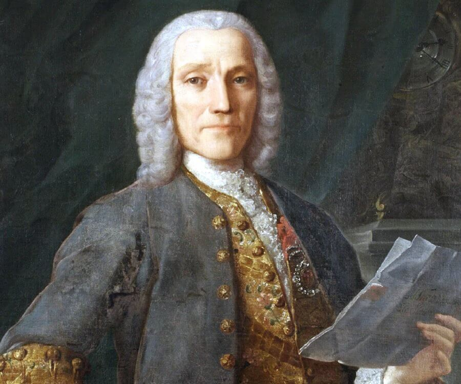

 (Nápoles, 1685 - Madrid, 1757) Compositor, clavecinista y pedagogo italiano. Nacido el mismo año que Johann Sebastian Bach y Georg Friedrich Händel, ocupa en la historia de la música una posición intermedia entre el gran estilo contrapuntístico barroco y el espíritu más sencillo y ligero del posterior período galante, del que se le puede considerar precursor, sobre todo por sus más de quinientas sonatas para clave. Hijo de Alessandro Scarlatti, los primeros pasos de Domenico en el mundo de la música estuvieron guiados por el ejemplo de su progenitor; en este contexto cabe situar su temprana dedicación a la ópera, género en el que su padre había conquistado una merecida fama. En 1719 recaló en Lisboa, donde entró al servicio de la infanta Bárbara de Braganza como maestro de clave. El matrimonio de ésta en 1728 con el príncipe heredero español Fernando llevó al compositor a Madrid, ciudad en la cual permaneció hasta su muerte, dedicado preferentemente a la docencia (entre sus discípulos se cuenta Antonio Soler) y a la composición de sonatas para clave y música sacra.
No se ha podido confirmar que Scarlatti se educara junto a los compositores Gaetano Greco, Francesco Gasparini y Bernardo Pasquini, como durante mucho tiempo se mantuvo. Cabe suponer, sin embargo, que se formó como músico al lado de su padre, Alessandro Scarlatti, y otros miembros de su familia: sus tías, cantantes de profesión; Tomasso, su tío tenor, o su hermano Pietro Filippo, también compositor. En septiembre de 1701 fue nombrado segundo organista y compositor de la Capilla Real de Nápoles, donde su progenitor estaba empleado como maestro.
Al año siguiente Alessandro Scarlatti obtuvo un permiso para viajar con su hijo a Florencia. Es muy probable que Alessandro intentara conseguir un puesto ventajoso, con mejores condiciones que las que tenía en Nápoles, en el teatro de la corte. Durante los meses de estancia en la ciudad toscana Domenico conoció seguramente a Bartolomeo Cristofori, constructor de clavicémbalos para la corte y adelantado en la experimentación y la evolución del instrumento que Cristofori llamaba gravicembalo col piano y forte, uno de los antecedentes del piano moderno.
En 1703 Domenico Scarlatti escribió en Nápoles su primera ópera, L'Ottavia ristituita al trono, que fue dedicada a la condesa de San Esteban de Gormaz. Meses después, en ese mismo año, compuso el drama Giustino, destinado al palacio real de Nápoles con motivo del cumpleaños de Felipe V y dedicado al virrey del reino, el marqués de Villena. Un año más tarde readaptó la ópera de Pollarolo L'Irene y la dedicó a Antonio López Pacheco Girón y Portocarrero. En 1705 su padre le recomendó que acompañara al célebre castrato Nicolo Grimaldi a Venecia y a otras ciudades de Italia.
Ya por aquel entonces Alessandro comprendió que el gran potencial creador de su hijo debía empezar a templar sus armas alejado de la acogedora férula familiar. Prácticamente nada se conoce de los cuatro años que Domenico Scarlatti pasó en Venecia junto a Nicolo Grimaldi y su compañía. En 1709 fue contratado para servir a la reina viuda de Polonia María Casimira, exiliada en Roma. Para su pequeña corte Scarlatti llegó a escribir una cantata, un oratorio y al menos siete óperas –conocidas–, entre las que se encuentran los títulos La Silvia (1710), Tolomeo e Alessandro (1711), Tetide in Sciro (1712) y Amor d'un ombra, e gelosia d'un'aura (1714). En la ciudad eterna fue nombrado maestro de capilla de la basílica Giulia y, algún tiempo después, pasó a trabajar para el embajador de Portugal en el Vaticano, el marqués de Fontes.
Aunque no está debidamente documentado y contrastado, se cree que fue en esa época cuando tuvo lugar el mítico enfrentamiento musical entre Scarlatti y Haendel; el primero fue declarado ganador en el clave, y el segundo, en el órgano. Tras una temporada de trabajo en el Teatro Italiano de Londres, pudo en 1719 viajar a Lisboa gracias a su relación con el mentado embajador portugués, e ingresar como director en la Capilla Real portuguesa. Allí permaneció protegido por el monarca Juan V y fue maestro de música de la princesa María Bárbara de Braganza. En el ínterin realizó un viaje a Nápoles (1725) y otro a Roma (1728), donde contrajo matrimonio con Maria Gentili, con la que tuvo cinco hijos.
En 1729 acompañó a Sevilla a la princesa Bárbara de Braganza y al príncipe Fernando (heredero de la Corona española que reinaría como Fernando VI), recientemente esposados. En el alcázar de Sevilla permaneció cuatro años como clavicembalista y maestro de la princesa antes de que la corte se trasladara a Madrid en 1733, previo paso por Aranjuez (Madrid). En la capital continuó instruyendo a la futura reina en calidad de músico de cámara, pero también ejerció un magisterio directo sobre algunos músicos españoles, entre los que destaca el genial Antonio Soler. Siete años después de su llegada a Madrid, el músico italiano contrajo un segundo matrimonio con Anastasia Ximénez, natural de Cádiz, con la que tuvo cuatro hijos. En 1735 residía en una casa del noviciado de los jesuitas, en la calle ancha de San Bernardo, y, algunos años después, en la calle Leganitos, de donde seguramente ya no se mudó.
Su vida en la villa y corte estuvo marcada por su trabajo para la princesa y luego reina, para quien, en teoría, escribió sus casi seiscientas celebérrimas sonatas para clavicémbalo, y por otro factor sobre el que se ha especulado mucho, sin llegar a conocer los detalles: su afición al juego, convertida en Madrid en una verdadera adicción, que le llevó en numerosas ocasiones a la ruina económica, de la cual era rescatado una y otra vez por su protectora. El musicógrafo y compositor inglés Charles Burney escribió: “Farinelli nos informó de que Domenico Scarlatti, un encantador hombre de mundo, se había convertido en un adicto al juego [...] y cómo era liberado por su real señora de sus deudas”. Según otros testimonios, también Farinelli ayudó económicamente a su compatriota en más de una ocasión. A pesar de todo, el músico gozó siempre de los parabienes de la corte y del cariño y la admiración de la reina y de cuantos pudieron acercarse a él y descubrir su inmenso talento musical.
La obra de Domenico Scarlatti.
Scarlatti es una figura fundamental en el ámbito de la música para clavicémbalo. Fue, en efecto, el primero que estableció una técnica definitivamente adecuada a la naturaleza del instrumento, anteriormente sometido a las exigencias propias del órgano. Su estilo brillante da paso ya, hasta cierto punto, al vasto imperio del futuro piano. En sus sonatas para clavicémbalo sigue la feliz inspiración de su fantasía, lo cual no impide la aparición de ciertos matices más profundos y melancólicos. Si inconfundible resulta el ritmo propio de Scarlatti, como claramente se manifiesta a través de sus más de quinientas sonatas, no menos interesante es la armonía, con frecuencia establecida sobre audaces combinaciones de acordes, cuyas disonancias confirman el genio revolucionario del compositor.
La música que Scarlatti compuso en su etapa italiana muestra corrección y profesionalidad (por ejemplo, en sus óperas), pero no alcanza el milagroso estado creativo de la mayoría de las sonatas. De su música religiosa destacan especialmente la conocida como Misa de Madrid, de fecha incierta, en la que el autor demuestra su capacidad para la melodía y, a la vez, una gran maestría y un excelente conocimiento de la polifonía del siglo XVI, y el Stabat Mater, acaso posterior a la misa, también de límpida estructura polifónica, tratada con una gran riqueza armónica.
En cuanto a las sonatas para clave, en 1783 se realizó en Londres una primera edición de sus piezas bajo el título Essercizi per gravicembalo; este conjunto comprende un total de 29 sonatas y una fuga, conocida como “fuga del gato”. La colección había sido concebida por Scarlatti en señal de agradecimiento a Juan V de Portugal por haberlo nombrado caballero de la Orden de Santiago. Por su parte, las fuentes venecianas están formadas por quince volúmenes (copiados entre 1742 y 1757 y adquiridos por la Biblioteca Marciana de Venecia en 1835) que contienen 496 sonatas. Los documentos del Conservatorio de Parma contienen 463 sonatas, doce de las cuales no están incluidas en los libros venecianos. En Múnich existen otras tres sonatas únicas; el Museo Británico de Londres conserva también tres originales, y hay dos más en Cambridge (Gran Bretaña), dos en Turín (Italia), etc.
De hecho, el número de sonatas no deja de aumentar, pues han seguido apareciendo nuevos ejemplos, especialmente en archivos españoles (investigadores como Antonio Baciero o Rosario Álvarez han contribuido a enriquecer este patrimonio). Estas obras se olvidaron casi completamente hasta su “rescate” y publicación parcial por Czerny en 1839 y la reivindicación a contracorriente de talentos como Chopin. La edición y catalogación casi completa fue realizada por Alessandro Longo en 1906 y sería luego corregida y aumentada por el máximo estudioso de su figura, Ralph Kirkpatrick, cuyo trabajo definitivo sobre el napolitano apareció en 1953.
Casi todas estas sonatas, de breve duración (entre dos y ocho minutos, aproximadamente), responden a un idéntico esquema binario: dos partes sensiblemente similares que presentan esquemas rítmicos y motivos, casi sin desarrollo, por caminos modulantes. Esta fiel identidad estructural se vio compensada con un libérrimo y aparentemente inagotable estilo de escritura. Son incontables las invenciones de figuras rítmicas y brevísimos motivos melódicos, modelados por una heterodoxa e ilimitada imaginación tonal en la que destacan algunos recursos que utilizó como pocos en su época: los acordes de séptima no resueltos y, sobre todo, la acciaccatura, adorno disonante convertido en un principio de excitación, atracción, sensualización y repulsión tonal perfectamente encajado en la dinámica de la música. También frecuentó la extensión de las tesituras (recurrió con asombrosa libertad a todo el teclado) y el cruce de manos (apenas practicado hasta su época) como recurso virtuosístico y efectista, sin perder nunca el sentido de cohesión del discurso sonoro, aunque forzándolo al máximo.
Sus tempos lentos, impregnados de melancólica ensoñación, participan de la estética del llamado estilo sentimental germano (sencillez homofónica, periodicidad melódica, etc.), pero son especiados con la luminosidad cantabile de la música italiana y española. Fundamental para la definición de su estilo, efectivamente, fue la asunción de la música popular española y andaluza en particular, hasta el punto de que estas piezas se han considerado como música propiamente española.
Casi todos los estudiosos de Scarlatti, en efecto, han querido ver en el enriquecimiento que hizo de la escritura para clave una consecuencia de su fascinación por los cantes, tonadas, aires y, en fin, sonidos varios (guitarras, castañuelas o zapateados) del folclore que escuchó entre la gente del pueblo. Esta visión, si bien es parcialmente incontrovertible tras la audición de unas cuantas sonatas, ha sido matizada por algunos críticos, como Ann Livermore, quien sostiene que el foco de influencia primero fue la música de las Cantigas de Alfonso X el Sabio (1252-1284), que Scarlatti, según su hipótesis, debió de transcribir para la reina.
{kind=link}